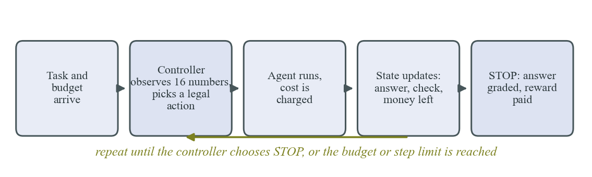
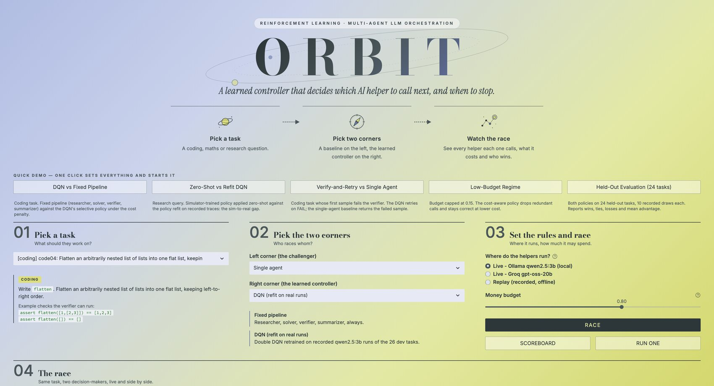
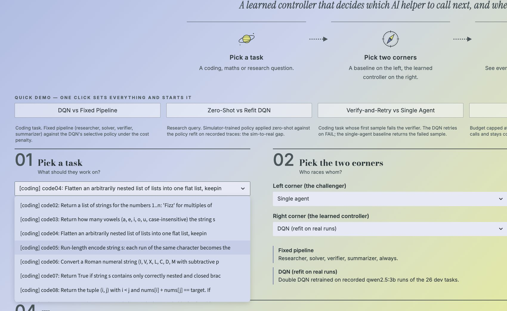
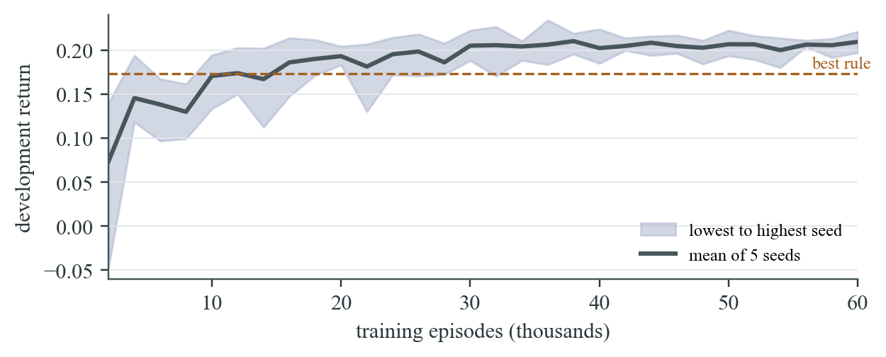
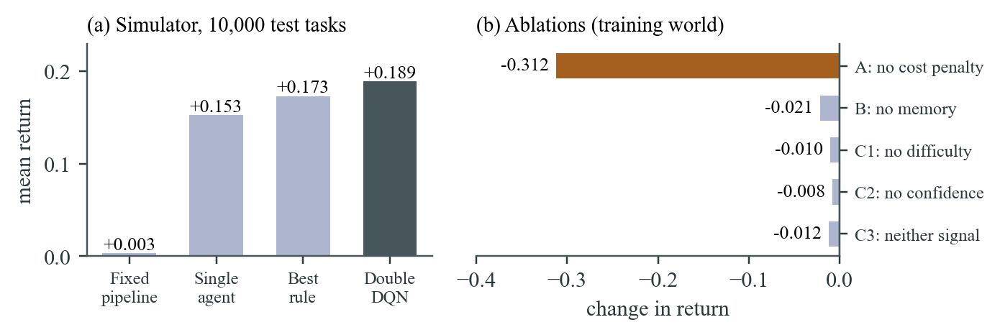
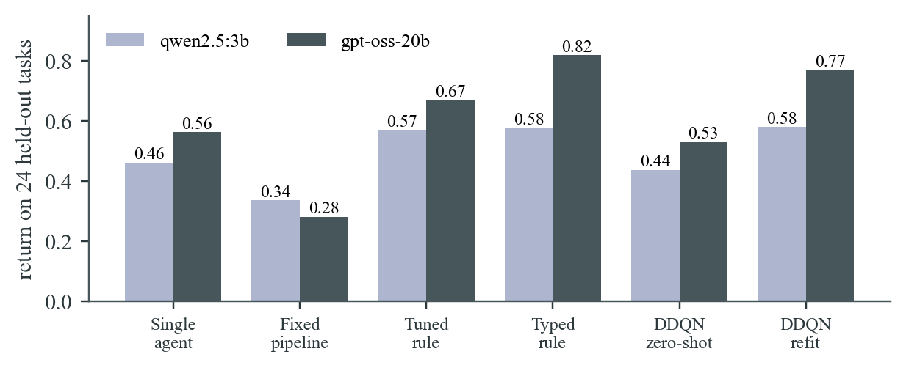
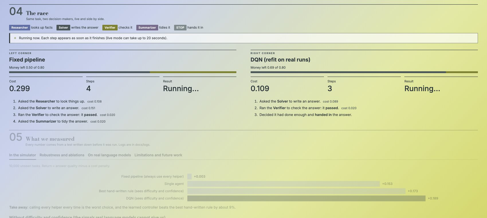
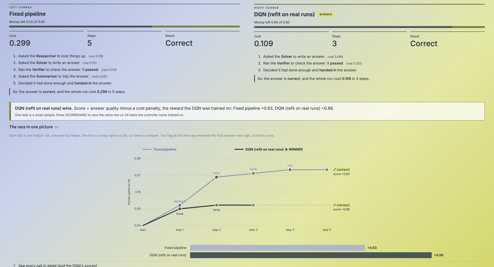
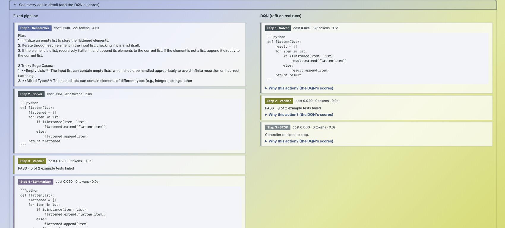

THAPAR INSTITUTE OF ENGINEERING AND TECHNOLOGY
(Deemed to be University), Patiala, Punjab 147004
Department of Electronics and Communication Engineering
A PROJECT REPORT ON
ORBIT
Learning When to Call Which Agent
Cost-Aware Orchestration of Multi-Agent Language Model Systems with Double Deep Q-Learning
Submitted in partial fulfilment of the requirements of the laboratory evaluation for
Course UCS760 (Reinforcement Learning and Conversational AI)
| Submitted to | Submitted by |
|---|---|
| [Name of faculty member] | Aditi Sikarwar |
| [Designation] | Roll No.: [Roll number] |
| Department of ECE, TIET Patiala | Electronics and Communication Engineering, Class of 2027 |
November 2026
Patiala, Punjab
This is to certify that the project report entitled "ORBIT: Learning When to Call Which Agent", submitted by Aditi Sikarwar (Roll No. [Roll number]), a student of the Department of Electronics and Communication Engineering, Thapar Institute of Engineering and Technology, Patiala, in partial fulfilment of the requirements of the laboratory evaluation for course UCS760, is a bonafide record of the work carried out by the student under my guidance and supervision during October and November 2026. The work has not been submitted, in part or in full, for the award of any other degree, diploma or certificate.
[Name of supervisor]
[Designation], Department of Electronics and Communication Engineering
Thapar Institute of Engineering and Technology, Patiala
Date: [Date] Place: Patiala
I hereby declare that the project report entitled "ORBIT: Learning When to Call Which Agent" is a record of my own project work, carried out for the laboratory evaluation of course UCS760 under the guidance of [Name of supervisor]. All sources of information, published work and software libraries that I used are acknowledged in the text and in the references.
Disclosure of AI assistance. The software, experiments and drafts of this report were developed with the help of an AI coding assistant (Claude Code, Anthropic), which wrote and ran code and drafted text under my direction. I defined the project, chose the research questions and evaluation plan, reviewed the results and the claims made from them, and take responsibility for the contents. Every experiment is recorded in the project decision log, including the mistakes that were found and corrected.
Aditi Sikarwar, Roll No. [Roll number] Date: [Date]
I thank my supervisor, [Name of supervisor], for the guidance and feedback that shaped this project, and for the freedom to treat a negative result as a result. I am grateful to the Department of Electronics and Communication Engineering and to Thapar Institute of Engineering and Technology for the laboratory facilities. I acknowledge the open-source tools on which this work stands (PyTorch, Ollama and the Groq inference service) and the authors of the papers in the references. Finally, I thank my family and friends for their support.
Systems built from several language-model agents (a researcher, a solver, a verifier and a summariser) can answer harder questions than one model, but every extra call costs tokens and time. Fixed pipelines call every agent on every task and spend much of that budget on tasks that did not need it. This project asks whether a learned controller can decide, step by step, which agent to call next and when to stop, so that answer quality is maximised after a cost penalty.
The problem is formulated as a Markov decision process with a 16-number observation, six masked actions and a reward equal to answer quality minus a scaled cost. A Double Deep Q-Network (DDQN) is trained in a simulator and compared with a single agent, a fixed pipeline and hand-tuned rule routers on 10,000 unseen tasks, with paired comparisons and decision rules written before the experiments. The DDQN reaches a mean return of +0.189 against +0.173 for the best rule (+9.3%), +0.153 for a single agent and +0.003 for the fixed pipeline. It keeps its advantage in five of six shifted task distributions and beats the best rule by 15.7% when difficulty and confidence signals are hidden. Training without the cost penalty collapses (return change -0.31).
A second study replays recorded outputs of two real models (qwen2.5:3b and gpt-oss-20b) on 50 tasks. A controller trained only in the simulator fails on research questions because it never calls the researcher; retraining on recorded traces repairs this and ties a tuned rule on the smaller model, but a rule with task-specific options is slightly better on the larger one. A live dashboard lets two controllers race on the same task. The results support learned orchestration as an automatic way to find cost-aware policies and show where hand-tuned rules stay competitive.
Keywords: reinforcement learning; Double DQN; multi-agent language model systems; cost-aware orchestration; sim-to-real transfer.
Applications built on large language models (LLMs) increasingly split one task across specialised agents: a researcher retrieves evidence, a solver drafts an answer, a verifier checks it and a summariser formats it [1], [2], [3]. Such pipelines can raise accuracy, but each call consumes tokens, time and money. A single agent is cheap but cannot recover from its own mistakes; a fixed pipeline calls every agent on every task. Our measurements show the second is not automatically better: in the simulator of this project the fixed pipeline earns a mean return of +0.003, no better than doing nothing, against +0.153 for a single agent, and on recorded outputs of two real models it also scored below the single agent.
The right amount of effort depends on the task, on what has already happened (for example whether a check passed) and on the money left. Choosing the next action from the current situation, with a reward that arrives only at the end, is a sequential decision problem, the setting reinforcement learning (RL) was designed for [4].
Given a task and a cost budget, choose a sequence of agent calls ending in STOP that maximises expected answer quality minus a penalty proportional to total cost. The controller sees an observation (task type, whether an answer exists, the last check result, call counts, money and steps left) but not the hidden correctness of the current answer. The objectives are: (1) formulate the problem as a Markov decision process with a loophole-tested reward; (2) implement a Double DQN controller and fair baselines; (3) test with pre-registered rules whether learning beats the best hand-written rule in a simulator, under shift and with signals hidden; (4) repeat the comparison on recorded real-model outputs and measure the simulation-to-reality gap; (5) provide a live demonstration in which two controllers handle the same task.
The tasks are single-turn and automatically graded.
AutoGen [1] composes applications from conversing agents that can use models, tools and human input; MetaGPT [2] encodes standard operating procedures and roles in an assembly-line style; ReAct [3] interleaves reasoning with actions such as search. These define what agents do, while the order of calls is usually written by hand. FrugalGPT [5] learns a cascade that accepts a cheap model's answer or escalates to a costlier one, and RouteLLM [6] trains routers that choose between a strong and a weak model per query. Both choose among models once; this project chooses among different roles (retrieve, solve, verify, tidy, retry, stop) one step at a time, with a state that includes the last check result and the budget left, which is why it is modelled as an MDP.
An MDP has states, actions, transitions and a reward; the agent seeks a policy maximising expected discounted return [4]. Q-learning [7] learns action values; the Deep Q-Network (DQN) [8] approximates them with a neural network, stabilised by experience replay [9] and a slowly updated target network. DQN overestimates values because one network both selects and evaluates the best next action; Double DQN [10] lets the online network select and the target network evaluate. We train with Adam [11] and a Huber loss, and apply action masking so every maximisation runs only over legal actions.
Policies trained in simulation often degrade on the real system; domain randomisation [12] widens the simulator so reality looks like one more variation. We measure the gap directly by running a simulator-trained controller on recorded real traces and then retraining on them. Deep RL results are sensitive to seeds and implementation details [13] and point estimates hide uncertainty [14], so we use five seeds, final checkpoints, confidence intervals and paired comparisons. We found no study that learns a sequential controller over heterogeneous roles under an explicit cost, against fair tuned baselines with decision rules fixed in advance, and reports transfer to real models.
A controller observes the situation and chooses the next action; four agents carry it out; an environment keeps the hidden state, charges every call and, at the end, grades the answer and pays the reward. The same controller runs on a simulator, on a replay of recorded real-model outputs and on live model calls (Figure 3.1). Tasks are of three types: coding (a small Python function), analytical (a word problem with an exact numeric answer) and research (a question about invented facts in 16 documents, which no model can answer from memory).

The controller sees 16 numbers (Table 3.1). Six actions exist: INVOKE_RESEARCHER, INVOKE_SOLVER (only before a first answer), INVOKE_VERIFIER, INVOKE_SUMMARIZER and RETRY_SOLVER (each needing an answer), and STOP. Illegal actions are masked in both action selection and the learning update.
| Index | Name | Meaning |
|---|---|---|
| 0 to 2 | Task type | One-hot: coding, analytical, research |
| 3 | Difficulty estimate | True difficulty plus noise (sd 0.15), clipped to 0 to 1 |
| 4 | Has answer | 1 once a solver call has produced a candidate |
| 5 to 7 | Last check | One-hot: none yet, passed, failed |
| 8 to 11 | Calls so far | Researcher, solver, verifier, summariser, each divided by 8 |
| 12, 13 | Money, steps left | Fractions of the budget and of the 8-step limit unused |
| 14 | Confidence | Noisy score (mean 0.70 if correct, 0.50 if wrong, sd 0.15) |
| 15 | Summarised | 1 if the current answer went through the summariser |
Reward. R = q x 1[correct] - lambda x C / C_ref - 0.3 x 1[no answer], where C is the sum of call costs, lambda = 0.5 and C_ref = 0.4. The quality q is 1 (0.9 in the simulator for a correct answer that was never summarised). Cost is paid when it occurs and quality at the end, so nothing rewards producing more text. An episode ends at STOP, when cost reaches the budget (uniform in 0.5 to 1.2) or after 8 steps. Four automated tests check the reward cannot be gamed: stopping at once scores below solve-then-stop; a useless repeat scores below stopping; a verified answer beats the same answer with wasted calls; exhausting the budget with no answer scores worst.
One solver call is correct with probability p = skill x (1 - difficulty) x 0.85^n x g(e) x b, where n counts earlier solver calls, g(e) = 0.6 + 0.4e for research and 0.9 + 0.1e otherwise (e is evidence, +0.35 per researcher call up to 1) and b = 1.10 for a retry after a failed check. Difficulty is Beta(2, 2); each cost is multiplied by a random factor in 0.8 to 1.2 and a retry costs 0.8 of a first call. Table 3.2 lists the rest.
| Parameter | Coding | Analytical | Research |
|---|---|---|---|
| Solver skill | 0.95 | 0.85 | 0.70 |
| Verifier reliability | 0.95 | 0.85 | 0.70 |
| Base cost: researcher / solver | 0.08 / 0.10 | 0.08 / 0.12 | 0.10 / 0.15 |
| Base cost: verifier / summariser | 0.03 / 0.03 | 0.05 / 0.03 | 0.08 / 0.03 |
Fifty tasks are used: 20 coding (hidden unit tests decide success; the verifier runs only the visible ones), 15 analytical and 15 research (6 need one document, 9 need two or three). The main model is qwen2.5:3b run locally through Ollama; a stronger check uses gpt-oss-20b through Groq. Research retrieval is plain keyword search: an early version let the model summarise passages and, on irrelevant ones, it wrote "none of these help", which the solver copied, so research accuracy fell to 0 of 9 until retrieval was made model-free. Agent outputs were recorded once (several solver samples per task and evidence level, with the verifier's verdict), and every policy replays the same recordings, so differences come from the policy and not from model luck; a retry replays the next unused sample. Real calls are priced as (tokens in + tokens out) / 2500 + 0.02, so an average solver call costs about 0.12 as in the simulator. In a pilot qwen reported confidence 0.98 when right and 1.00 when wrong, and no non-oracle difficulty estimate existed, so in every real-model experiment the difficulty and confidence entries are set to zero (Section 5.4 measures what this costs).
The controller is a network with two hidden layers of 128 units. Episodes use an epsilon-greedy policy over legal actions; transitions (with next-state masks) fill a 50,000-entry replay buffer. The target is y = r + 0.99 x Q_target(s', argmax over legal a' of Q_online(s', a')); the Huber loss is minimised with Adam (learning rate 0.0003, gradient norm clipped at 10, batch 64) and the target network is refreshed every 1,000 steps. Epsilon falls from 1.0 to 0.05 over the first 60% of 60,000 episodes (20,000 for the real-trace refit); five seeds are trained and the final checkpoint is used. The blind variant zeroes the difficulty and confidence inputs; the refit variant is trained on the replay environment of the 26 development tasks only. Baselines are a single agent, a fixed pipeline (researcher, solver, verifier, summariser, stop), a rule router (best of 960 hand-built rules, tuned on 5,000 development tasks), a blind rule (best of 256 rules without difficulty or confidence) and, for real traces, a typed rule (best of 768 rules with per-task-type options).
A web dashboard runs any two controllers on the same task, live or from recorded runs. The user picks a task and two corners (Figure 3.2) and presses RACE; five one-click shortcuts set up prepared matchups. The page scrolls to the race, shows each side's steps as they happen, and at the end names a winner by the training reward (computed, never fixed in advance), draws money spent per step for both, and offers a scoreboard over 24 held-out tasks.


Splits and statistics. In the simulator, rules are tuned on 5,000 development tasks (seeds 0 to 4,999) and everything is reported on 10,000 test tasks (seeds 100,000 to 109,999); training seeds start at 1,000,000 and never overlap. For real models the 50 tasks are split by type, even positions to development (26 tasks: rule tuning and refit) and odd positions to test (24 tasks, 100 seeded episodes each). Methods are compared on identical seeded tasks, so differences are paired. The simulator interval is 1.96 standard errors of the paired difference. For real models the unit is the task: returns are averaged per task and the interval is 2.07 times the standard deviation of the 24 paired differences over the square root of 24, because episodes of one task are not independent. A method is said to beat another only if the interval excludes zero, and for DDQN results at least four of five seeds must also lie above the comparison.
Pre-registration and fairness. Before each experiment the question, settings, predictions and decision rule were written into the decision log and committed to version control; afterwards the log records the result and scores each prediction, including the wrong ones (Appendix B). Rules are tuned on development tasks only (tuning 300 rules on 1,000 tasks once gave a lucky winner, +0.177 on development and +0.137 on test, so the set was enlarged), the rule family was extended until it could use every signal the controller uses, final checkpoints of all seeds are reported without picking, and the blind controller is compared with a blind rule.
Implementation. About 3,300 lines of Python with PyTorch in six packages and 87 automated tests. Models run on a personal laptop (qwen2.5:3b at about 14 tokens per second; gpt-oss-20b through Groq, capped at 650 requests); training one simulator controller takes a few minutes. The repository holds the decision log, all run logs and the recorded traces.
Returns are the reward of Section 3.2, averaged over tasks (higher is better). Simulator numbers use 10,000 unseen test tasks unless stated; real-model numbers use the 24 held-out tasks.
Feasibility tests in simple worlds found the best hand rule within 0 to 1.3% of the optimum (no-go), so a richer world was designed before it was tested. The first DDQN comparison looked promising (+0.173, 12.7% above the best simple baseline), but three flaws in our own comparison were found before any claim was made: the rule search could not skip the summariser; a lucky tuning winner; and the rules never read the difficulty estimate the DDQN reads. With difficulty-aware rules (960 rules) the best rule reached +0.173 and the DDQN advantage fell to 0%; the 12.7% came from a weak baseline. A tested mechanism also failed: when confidence is below 0.5 the answer is wrong 92% of the time, yet replacing the check there by an immediate stop changed the return by only +0.0075 (interval 0.0063), so the hypothesis was not supported.
With the original 20,000-episode setting one seed (+0.136) was clearly below the rule. Three longer settings declared in advance were compared on development tasks: S1 (learning rate 0.001) +0.181, S2 (learning rate 0.0003, target update 1,000) +0.203 and S3 (S2 with longer exploration) +0.198. S2 was chosen on development return alone and removed the unstable seed: its five test scores (+0.183 to +0.195) all exceed the best rule. Figure 5.1 shows the learning curve, which flattens near +0.205 after about 20,000 episodes.

| Method | Return | Success | Cost | Steps |
|---|---|---|---|---|
| Fixed pipeline | +0.003 | 0.37 | 0.293 | 5.0 |
| Single agent | +0.153 | 0.34 | 0.123 | 2.0 |
| Best rule (uses difficulty and confidence) | +0.173 | 0.46 | 0.233 | 4.0 |
| Double DQN (5 seeds) | +0.189 | 0.47 | 0.215 | 3.7 |
The DDQN is 9.3% above the best rule and 24% above the single agent, with higher success than the single agent (0.47 against 0.34) at cost 0.215 against 0.123, which the reward judges worth paying; the fixed pipeline pays 0.293 for almost no gain. The 9.3% is just under the 10% bar set at the start, and both numbers are reported. Paired with the rule on identical tasks, every seed is ahead by +0.009 to +0.022, each beyond its interval (about 0.007). The policy solves first, stops or tidies after a passed check, retries after a failed one and gives up early on hard tasks, a structure it found without being told.

Controllers and rule were trained or tuned once and tested in six other worlds (Table 5.2). A rule retuned by a human who knew the shift is a reference.
| World | Single | Rule (fixed) | Rule (retuned) | DDQN | DDQN - rule |
|---|---|---|---|---|---|
| Training world | +0.153 | +0.166 | +0.167 | +0.187 (+0.181) | +0.020 |
| Tight budget | +0.153 | +0.172 | +0.172 | +0.167 (+0.161) | -0.005 |
| Loose budget | +0.153 | +0.166 | +0.167 | +0.181 (+0.170) | +0.016 |
| Research-heavy (70%) | +0.067 | +0.029 | +0.072 | +0.077 (+0.072) | +0.048 |
| Harder tasks | +0.088 | +0.085 | +0.093 | +0.103 (+0.090) | +0.018 |
| Easier tasks | +0.213 | +0.246 | +0.241 | +0.263 (+0.257) | +0.016 |
The fixed rule breaks in the research-heavy world (+0.029, below the single agent at +0.067), while the DDQN keeps +0.077, level with the retuned rule (+0.072) without retuning. It is at or above the retuned rule in five of six worlds and loses only under tight budgets (within noise). Its value is robustness more than peak return.
Each variant was retrained for five seeds and tested on the same 10,000 tasks (Figure 5.2b). The cost penalty is by far the most important ingredient: without it the controller learns that calls are free, makes 7.2 calls per task at cost 0.54, and its true return falls to -0.123 (a change of -0.312). Of the signals, the memory of the episode matters most in the training world (-0.021), because without the last check result the controller stops verifying. The difficulty estimate (-0.010) and confidence score (-0.008) overlap, since both say the answer is probably wrong. Our predictions were only partly right: the cost-penalty prediction held, the difficulty estimate hurts most among the signals only in the research-heavy world, and the memory of the episode hurt more than expected in the training world.
Real models give neither difficulty nor confidence, so both were removed together. The best blind rule is the single agent in disguise (+0.153); the blind DDQN reaches +0.177, 15.7% above it, with all five seeds ahead by +0.017 to +0.033 beyond their intervals, passing the pre-registered bar. The prediction that the DDQN would lose half its edge was wrong: it lost 0.012 while the best rule lost 0.020. The blind rule family is small, which may inflate the gap.
Research questions cannot be answered without the researcher: success is 0% with no call; with one call it is 40% (qwen) and 53% (gpt-oss), and with two it is 43% and 93%. The smaller model cannot chain facts across documents, so it plateaus near 43%. Coding success without help is 0.68 (qwen) and 1.00 (gpt-oss); analytical success is 0.95 and 1.00. Both models already solve most coding and analytical tasks, so orchestration has little to gain there.
Rules and the refit DDQN were fitted on the 26 development tasks and every policy replayed on the 24 held-out tasks (Table 5.3, Figure 5.3). The first tuned rule calls the researcher once on research tasks, solves once and stops; the typed rule calls it once (qwen) or twice (gpt-oss), verifies coding answers on qwen and retries twice.
| Policy | qwen return | success | cost | gpt-oss return | success | cost |
|---|---|---|---|---|---|---|
| Single agent | +0.462 | 0.59 | 0.106 | +0.563 | 0.71 | 0.116 |
| Fixed pipeline | +0.336 | 0.75 | 0.334 | +0.282 | 0.75 | 0.374 |
| Tuned rule (researcher once) | +0.569 | 0.72 | 0.120 | +0.670 | 0.83 | 0.131 |
| Typed rule | +0.576 | 0.76 | 0.146 | +0.819 | 1.00 | 0.145 |
| DDQN, zero-shot (simulator only) | +0.438 | 0.64 | 0.162 | +0.530 | 0.71 | 0.143 |
| DDQN, refit on traces | +0.580 | 0.77 | 0.154 | +0.770 | 0.96 | 0.153 |

A well-chosen rule beats the fixed pipeline on both models (+0.233 and +0.388 with intervals 0.134 and 0.140), because the pipeline pays about three times the cost of a single agent for steps most tasks do not need. On gpt-oss the refit DDQN beats the single agent (+0.207, interval 0.142) and the zero-shot controller is slightly but clearly worse than it (-0.033, interval 0.009). When the rule family may be task-specific, the refit DDQN ties the typed rule on qwen (+0.005, interval 0.018) and is slightly but clearly behind it on gpt-oss (-0.048, interval 0.041): it calls the researcher about 3.3 times on gpt-oss research tasks where two suffice, and one of five seeds scores noticeably lower (+0.656 against +0.79 to +0.81). With only 26 training tasks this is unsurprising. On these traces a hand-tuned rule is as good as the learned policy or slightly better; the learned policy finds a comparable rule without being told which options exist.
Run unchanged on real traces, the simulator-trained blind DDQN never calls the researcher on research tasks, so its success there is 0.00 on both models. In the simulator the researcher only raised later solver success and was rarely worth its cost; with real models it is indispensable. Retraining on traces repairs the gap: the refit controller calls the researcher 1.40 (qwen) and 3.33 (gpt-oss) times per research task, and research success becomes 0.46 and 0.87. Coding shows the opposite lesson: the zero-shot controller verifies and summarises coding answers, which helps on qwen (success 0.86 against 0.74 for the first tuned rule) but wastes money on gpt-oss, where the first answer is already right.
The dashboard runs the saved refit controller (training seed 0, fixed in advance) against any other policy. Figure 5.4 shows a race on the coding task flatten: the fixed pipeline and the DDQN take their steps side by side, each recorded in plain words with its cost. Figure 5.5 shows the finished race: both answers are correct, but the DDQN stops after solving and one verifier call (cost 0.109, score +0.86) while the pipeline also runs the researcher and summariser (cost 0.299, score +0.63), so the DDQN is declared the winner. The chart under the banner plots money spent against step for both. Figure 5.6 expands every call, with the researcher's plan and the code produced.



One task is a small sample, so the scoreboard races two policies on all 24 held-out tasks, each averaged over 10 recorded draws (Table 5.4). The DDQN wins clearly against the fixed pipeline and the simulator-only controller, is ahead on average against the single agent but wins fewer tasks than it loses (6 against 11), and is behind the typed rule. The demonstration model scores +0.536 here, below the five-seed average of +0.580, because it is one training run; the page reports the scoreboard as computed.
| Opponent | Right wins | Ties | Left wins | Mean advantage |
|---|---|---|---|---|
| Fixed pipeline | 16 | 0 | 8 | +0.196 |
| Single agent | 6 | 7 | 11 | +0.068 |
| Typed rule | 1 | 15 | 8 | -0.056 |
| DDQN, simulator only | 12 | 7 | 5 | +0.064 |
What the evidence supports. In a simulator whose parameters were fixed before training, a Double DQN finds a cost-aware policy that beats the best hand-written rule by 9.3%, stays ahead under most shifts and beats a blind rule by 15.7%; the cost penalty is the essential ingredient. On real models the choice of agents matters and the policy retrained on real traces finds a rule as good as a human-tuned one in about one case out of two. What it does not support. The learned controller does not clearly beat a well-tuned task-specific rule on real traces, and it does not transfer from the simulator without retraining.
This project formulated the orchestration of a small team of language-model agents as a Markov decision process and trained a Double DQN controller to choose the next agent or to stop. In a simulator it beat every baseline (+0.189 against +0.173 for the best rule, +0.153 for a single agent and +0.003 for a fixed pipeline), kept its edge in five of six shifted worlds and, with difficulty and confidence hidden, beat the best blind rule by 15.7%. The cost penalty is the essential ingredient: without it the return falls by 0.31.
On recorded outputs of two real models the picture is more modest and more informative. The choice of agents matters, because research questions cannot be answered without the researcher and a fixed pipeline wastes money. A simulator-trained controller does not transfer, since it never calls the researcher; retraining on traces removes that failure and ties a tuned rule on the smaller model, while a rule with task-specific options is slightly better on the larger one. The value of learning is that it discovers a policy of comparable quality automatically and handles the cost trade-off without hand-written rules.
Future scope. (1) More tasks and models, to narrow the intervals. (2) Online learning from live calls, capturing the effect of feedback on retries. (3) A randomised simulator in the spirit of [12], so a simulator-trained controller transfers without retraining. (4) A learned difficulty estimate, so the controller can use the signal that helped most in simulation. (5) An LLM-as-router baseline with its routing calls counted in the cost. (6) Performance profiles and interval estimates across many seeds, as recommended in [13] and [14].
[1] Q. Wu et al., "AutoGen: Enabling next-gen LLM applications via multi-agent conversation," arXiv:2308.08155, 2023.
[2] S. Hong et al., "MetaGPT: Meta programming for a multi-agent collaborative framework," arXiv:2308.00352, 2023.
[3] S. Yao et al., "ReAct: Synergizing reasoning and acting in language models," arXiv:2210.03629, 2022.
[4] R. S. Sutton and A. G. Barto, Reinforcement Learning: An Introduction, 2nd ed. Cambridge, MA, USA: MIT Press, 2018.
[5] L. Chen, M. Zaharia and J. Zou, "FrugalGPT: How to use large language models while reducing cost and improving performance," arXiv:2305.05176, 2023.
[6] I. Ong et al., "RouteLLM: Learning to route LLMs with preference data," arXiv:2406.18665, 2024.
[7] C. J. C. H. Watkins and P. Dayan, "Q-learning," Machine Learning, vol. 8, no. 3-4, pp. 279-292, 1992.
[8] V. Mnih et al., "Human-level control through deep reinforcement learning," Nature, vol. 518, no. 7540, pp. 529-533, 2015.
[9] L.-J. Lin, "Self-improving reactive agents based on reinforcement learning, planning and teaching," Machine Learning, vol. 8, no. 3-4, pp. 293-321, 1992.
[10] H. van Hasselt, A. Guez and D. Silver, "Deep reinforcement learning with Double Q-learning," in Proc. AAAI Conf. Artificial Intelligence, vol. 30, no. 1, pp. 2094-2100, 2016.
[11] D. P. Kingma and J. Ba, "Adam: A method for stochastic optimization," in Proc. Int. Conf. Learning Representations (ICLR), 2015.
[12] J. Tobin et al., "Domain randomization for transferring deep neural networks from simulation to the real world," in Proc. IEEE/RSJ Int. Conf. Intelligent Robots and Systems (IROS), 2017.
[13] P. Henderson et al., "Deep reinforcement learning that matters," in Proc. AAAI Conf. Artificial Intelligence, vol. 32, no. 1, 2018.
[14] R. Agarwal et al., "Deep reinforcement learning at the edge of the statistical precipice," in Advances in Neural Information Processing Systems (NeurIPS), 2021.
The repository has six code packages: env (simulator and Gym-style environment), baselines (single agent, fixed pipeline, rules), rl (Double DQN, replay buffer, training), eval (evaluation runner and the tuning, shift, ablation, blind and real-trace studies), llm (model client, agents, 50 tasks with graders, trace cache and replay environment) and app (race engine, charts, Streamlit dashboard). Run PYTHONPATH=. python3 -m pytest -q tests for the tests, python3 -m eval.tune_dqn, eval.shift, eval.ablate, eval.ablate_blind, eval.real_eval <cache> and eval.real_eval_typed <cache> for the studies, and ./run_demo.sh for the dashboard. All run logs are in docs/logs.
| Experiment | Prediction or rule | Outcome |
|---|---|---|
| Feasibility, simple worlds | Go if the optimum beats the best rule by 10% | No-go (within 0 to 1.3%); a richer world was designed first |
| First DDQN vs rules | 10% over the best rule | +12.7% over a weak rule; flaws found; a fair rule gave 0% |
| Plan A: stabilise training | Beat the rule beyond noise, no seed below | Met on all five seeds; +9.3%, just under the 10% bar |
| Shift study | Edge survives shifts | Mostly supported: at or above the retuned rule in 5 of 6 worlds |
| Ablations | Difficulty hurts most; cost penalty large | Cost penalty as predicted; memory hurt more than difficulty in the training world |
| Blind test | Loses half its edge, keeps +3% | Passed (+15.7%); the loss was smaller than predicted |
| Real qwen: fixed pipeline | Beats the single agent | Wrong: -0.126 (interval includes 0) |
| Typed rule vs refit | Tie on both models | Tie on qwen (+0.005); typed rule better on gpt-oss (-0.048) |